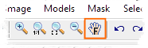

Did you know...

Panning (
press and hold the right mouse button
) of the large raster images can be improved by using the fast-pan mode:
Press the F-hand icon in the MIB toolbar to enable this mode